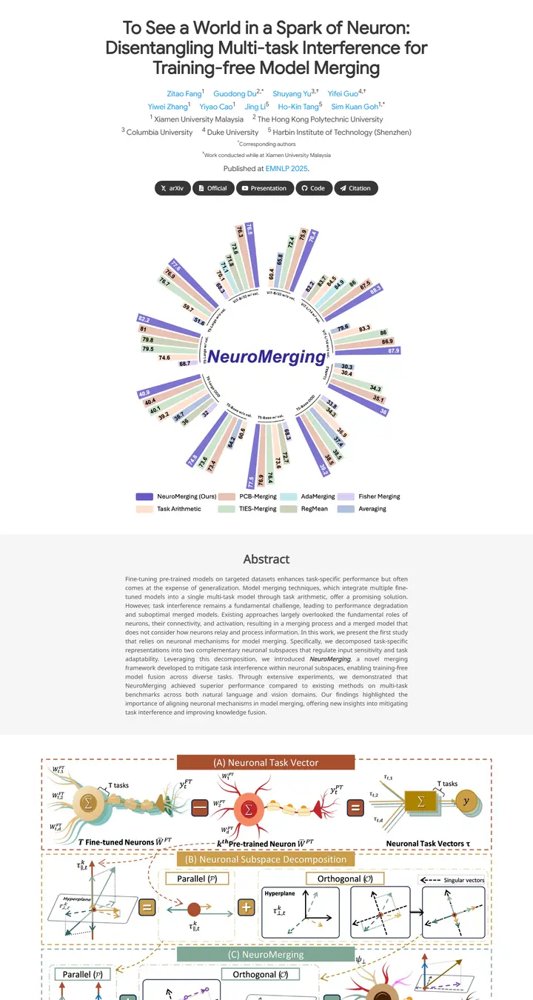

To See a World in a Spark of Neuron: Disentangling Multi-task Interference for Training-free Model Merging
一圈粉彩色的柱条围绕一个紫色斜体词绽开，结果图就是封面，一个朴素的学术页面从中生长出来。

已对照实际渲染的页面核对。
入选理由
用径向柱状图做预告图，中心写着方法名，是令人过目不忘的招牌图形。灰色摘要带和按颜色编码的方法图保持了清晰的节奏。
下面的说明和 DESIGN.md 正文是英文。为了让编程 agent 读同一个版本，这部分没有翻译。
概述
配色
字体
Google Sans
To See a World in a Spark of Neuron: Disentangling Multi-task Interfer
Abstract · Method · Results · BibTeX — 0123456789
Noto Sans
To See a World in a Spark of Neuron: Disentangling Multi-task Interfer
Abstract · Method · Results · BibTeX — 0123456789
间距与形状
页面模块
使用建议
相似风格

GAMEBoT: Transparent Assessment of LLM Reasoning in Games
一块整洁的游戏竞技场记分牌，海军蓝标题上方是吉祥物徽章，下面冷灰蓝渐变色带里放着新闻卡和紫色表头的分数表。

InstructPart: Task-Oriented Part Segmentation with Instruction Reasoning
一本灰白条纹的实验笔记，标题用青绿色标出自己的关键词，一只虚线框里的水壶在你读第一行之前就把任务讲明白了。

Symmetrical Visual Contrastive Optimization: Aligning Vision-Language Models with Minimal Contrastive Images
一套双色论证，青色代表匹配的图像，橙色代表不匹配的，这套色码从正文高亮一路延续到灰白交替色带上的每张图。

Slamming: Training a Speech Language Model on One GPU in a Day
一张图讲完的论证，本该放预告视频的位置是一张带注释的大号缩放曲线图，然后是灰色摘要，以及按 GPU 预算标注的一排排安静的音频播放器。

Peeking Ahead of the Field Study: Exploring VLM Personas as Support Tools for Embodied Studies in HCI
用胶带摊开在白桌上的野外笔记本，高挑的浅灰标题，一长串天蓝色的作者名，从鲑鱼色过渡到沙色的三格分镜讲清了整个研究。

Reflection Separation from a Single Image via Joint Latent Diffusion
一块夜色玻璃，轻轻一拖就能擦净。